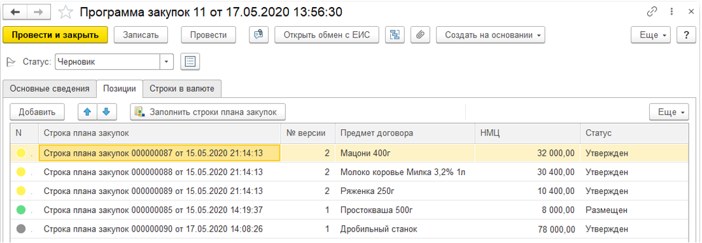

|
Графическая схема справки
|
Ввод начального плана прошлого периода для выгрузки программы закупок на ЕИС
Для организаций, ведущих закупки по 223-ФЗ принявших решение выгружать программу закупок на ЕИС из 1С необходимо создать программу закупок прошлого периода и связать с размещенным планом в ЕИС по УИД. О том как это сделать можно узнать здесь (Ввод остатков размещенного плана ЕИС).
Особенности при работе с документом
По каждой организации в периоде "Год" может быть введено несколько видов программы:
- Программа закупок в рублях, содержащая строки годового плана закупок;
- Программа закупок в валюте, содержащая строки годового плана закупок;
- Инновационная программа закупок, содержащая строки для закупки инновационной продукции, высокотехнологичной продукции и медикаментов.
Нужно понимать, что программа закупок включает строки плана закупок, которые начиная со статуса "Утвержден" наследует статусы программы закупок. Пояснение на примере.
В статусе "Черновик" программа закупок всегда содержит строки, утвержденные к размещению, то есть в статусе "Утвержден". При удачной выгрузке программы закупок на ЕИС программа и все составляющие её строки примут статус "Выгружен". А после размещения программа и составляющие её строки перейдут в статус "Размещен". Строка плана, выгруженная и размещенная на ЕИС будет в этом плане пока план используется. Если возникнет потребность отказаться от закупки по размещенной строке плана, то нужно создать на основании выгруженной строки новую строку плана и отредактировать количество и стоимость в ноль. На ЕИС будет выгружена строка плана содержащая нулевое значение. То есть удалять размещенные строки плана не допустимо. Все сказанное касается корректировки размещенных строк плана. Для корректировки пользователю необходимо на основании размещенной строки создать новую, изменить в ней данные и утвердить.

Для выгрузки измененных или добавленных строк плана, необходимо использовать новую версию размещенной программы закупок, которая также создается вводом на основании ранее размещенной. Новая версия программы закупок содержит размещенные строки, которые не менялись (отмечены зеленым шариком), измененные строки плана (отмечены желтым шариком), добавленные строки (отмечены серым шариком).

Для заполнения табличной части "Позиция" строками плана предназначена кнопка "Заполнить строки плана закупок". При загрузке строк плана в программу всегда загружаются актуальные (последние версии) документы. Систему можно проверить по кнопке "Актуализировать версии строк плана". Таким образом, пользователь визуально понимает в каком состоянии находится каждая строка плана, а также по номеру версии как часто менялась строка плана за все время существования плана.
Присваивание статуса "Размещен", а также регистрационного номера выполняется в результате загрузки данных с ЕИС. Обработка "Обмен данными с ЕИС", вкладка "Загрузка". Если по техническим причинам не удалось получить регистрационный номер с помощью обработки, то пользователь может заполнить номер и перевести статус вручную.
Закладка "Строки в валюте" сделана для удобства и позволяет быстро посмотреть в рублевой программе закупок строки плана, введенные в валюте. На практике такие строки требуют особой внимательности при размещении на ЕИС. Они регистрируются для ЕИС в рублях как и обычные строки рублевого плана, но с обязательным указанием валюты и курса пересчета в рубли. Валютная строка содержит сумму в рублях, сумму в валюте, валюту, курс, дату курса.